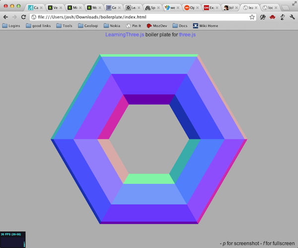

概述
WebGL 是web的3D绘图技术。正如名字提示的一样，它跟OpenGl相关，是硬件加速3D绘图的工业标准。 3D绘图比2D绘图复杂得多。 我们不仅要处理一个完整的三维坐标系和所有与之相关的数学问题，而且我们还要更多地关注图形上下文的状态，其中的颜色跟变换远远超过2D上下文。
在2D绘图中，我们使用路径绘制图形，然后使用填充样式填充路径，这相当简单。 另一方面，3D涉及一个非常复杂的多阶段过程：
首先，使用几何形状表示图形，所有的点在三维空间中叫做“向量”。下一步，需要给几何体添加更多的信息。 例如，表面法线定义物体光线的反射方向。 接着，我们必须设置光源跟相机。相机定义观察的视角。光源就是空间中的点指定光线的方向，这让物体看起来像什么。 上面的都设置好了，接着使用着色器。
着色器使用相机、光源、法线以及几何体作为输入来绘制出最终的像素图像。 （我知道这只是简单的的OpenGL的解释，但请听我说。）着色器分为两类，一种是用来修改向量创建最后的光反射， 另一种是绘制实际的像素。明显后一种就是所说的像素着色器。
着色器本质上是使用一种类C语言的特定的OpenGL语言编写的小程序。这些代码不易编写因为涉及到大规模的并行。 现代图形处理器本质上是一种特殊的超并行多核芯片，它能非常有效地完成一件事情：快速渲染众多像素。
着色器是现代图形背后的力量，但它们不容易处理。在有利的一面， 你的应用程序可以安装自己的着色器来做很多令人惊奇的事情， 但负面的一面是你的应用程序必须安装自己的着色器。 WebGL标准中没有内置的着色器。你必须使用你自己的。
上面的就是一个简单的版本关于OpenGL ES 2.0 和OpenGL 3如何工作的（旧版本的OpenGL没有着色器。） 这是一个复杂但是灵活的系统。WebGL本质上也一样，只是使用了Javascript的API替代了C语言。
我根本没有时间教你们OpenGL。 我们至少需要整个为期一周的课程学习OpenGL。就算我们有时间，你也可能不会这样写代码。为了写一个简单的游戏， 需要写上成千上万行的代码。相反，你能够使用类库或者图形引擎来做低级的工作，你只需要集中业务逻辑即可。 在WebGL世界中，最流行的开源类库项目叫做ThreeJS。 它极大地简化了制作3D交互应用，也拥有自己可重用的着色器。 这就是我今天要教你的：ThreeJS。
实例
以下是一些实例。
这是个叫做僵尸大战牛牛的简单游戏，这个游戏使用鼠标控制牛牛移动避免被丧尸吃掉。 这完全使用3D以及硬件加速。这看上去很像Wii上专业的游戏，但这完全在浏览器完成的。
这是一个给你拥有像Google Earch体验而无需安装的独立的应用。

这是另一个有趣的使用3D可视化音频实例。
以下所有的都是使用Three.JS和WebGL创建生成的。
浏览器支持
在深入学习前，谈谈浏览器的支持。Opera、FireFox以及所有桌面的Webkit内核的浏览器都支持WebGL。 通常它们映射到本地OpenGL堆栈。最大的遗憾是IE。IE10对2D的canvas具有良好的支持，但不支持WebGL。还有，微软没有发布任何将来支持的计划。 这还不明确在Windows 8系统对第三方浏览器及插件的禁止有何变化。
移动端几乎没有支持webGL。iOS也只在iAd部分支持，正式的浏览器也不支持。未来苹果公司可能会支持。 一些安卓手机支持WebGL，但通常只在安装了额外的FireFox或者Opera上。因为桌面端的Chrome支持WebGL，以及Google让Chrome成为安卓的默认浏览器， 希望同时也能获得WebGL的标准。现在即使在手机中支持不是很好，以后每一年都会变得更好。 WebGL将是未来Web标准的一部分，背后都有一些大公司支持，所以现在是一个很好的开始
ThreeJS 模板
ThreeJS 是开源类库是由创意非凡的的程序员Mr. Doob所开发的。
他真实的名字是Ricardo Cabello，如果你搜索Mr. Doob 你会发现他很酷的图形黑客事迹，至少可以追溯到十几年前。
ThreeJS是使用WebGL的著名类库。它自动处理繁琐的东西，你只需要关注你的应用。为了更加容易使用Jerome Etienne工作，
创建了一个模板让你更加容易开始工作 boiler plate builder。
里边包含了所用通用的组件，例如相机，鼠标输入和渲染，这样你就可以开始使用一个运行的ThreeJS应用。
模板有几个选项，但这些项目中你只需要使用默认选项。
来看看这很简单。跳转到ThreeJS Boiler Plate Builder页面 并下载一个新的模板。解压然后在浏览器打开其中的index.html页面看看是否工作。你会看到如下的图片：

Now open up the
index.html file in your text editor. Notice that the template is pretty well documented. Let's start with
the
init function.
现在使用文本编辑器打开index.html。注意到模板有相当好的注释。
我们从init函数开始。
// 初始化场景
function init(){
if( Detector.webgl ){
renderer = new THREE.WebGLRenderer({
antialias : true, // 输出平滑
preserveDrawingBuffer : true // 允许屏幕截图
});
// renderer.setClearColorHex( 0xBBBBBB, 1 );
// uncomment if webgl is required
//}else{
// Detector.addGetWebGLMessage();
// return true;
}else{
renderer = new THREE.CanvasRenderer();
}
renderer.setSize( window.innerWidth, window.innerHeight );
document.getElementById('container').appendChild(renderer.domElement);
译者注：由于ThreeJS版本更新原因，以上代码已不能运行，可以使用最新版本的ThreeJS版本， 或者注释掉WebGLRenderer渲染器，而使用CanvasRenderer渲染。
首先，模板初始化了系统。
它先尝试创建WebGL渲染器实际上ThreeJS也支持像2D canvas的其他形式。这里只使用WebGL。
如果这不能创建WebGLRenderer回退到2D canvas的使用。
尽管canvas会慢得多但比显示空白要好。
接着，它设置了canvas的尺寸并将其作为container（已定义在页面上的DIV元素）的子元素。
// 添加 Stats.js - https://github.com/mrdoob/stats.js
stats = new Stats();
stats.domElement.style.position = 'absolute';
stats.domElement.style.bottom = '0px';
document.body.appendChild( stats.domElement );
然后，创建了Stats对象并将其添加到场景中。这会在屏幕上显示代码的运行速度。
// 创建场景
scene = new THREE.Scene();
最后，创建了一个Scene对象。ThreeJS使用称为场景图的树状结构。
scene是树的根节点。在场景中创建的一切东西都是场景树的叶节点。
// 在场景中设置相机
camera = new THREE.PerspectiveCamera(35, window.innerWidth / window.innerHeight, 1, 10000 );
camera.position.set(0, 0, 5);
scene.add(camera);再然后就是相机。这个是透视相机。一般来说，你可以单独保留这些值，但如果需要，可以更改相机的位置。
// 创建相机控制
cameraControls = new THREEx.DragPanControls(camera)
DragPanControls 是当你拖拽鼠标是移动相机的工具对象。
你可以移除它如果你需要其他类型的控制方式。
// 支持窗口尺寸
THREEx.WindowResize.bind(renderer, camera);
// 允许使用'p'按钮截图
THREEx.Screenshot.bindKey(renderer);
// 当特性支持时，运行使用 'f' 按键全屏显示
if( THREEx.FullScreen.available() ){
THREEx.FullScreen.bindKey();
document.getElementById('inlineDoc').innerHTML += "- f for fullscreen";
}
一般我们需要手动缩放窗口大小，然而Threex.WindowResize对象（模板提供的，非ThreeJS）会帮我们处理。
让场景大小适合窗口。下一行添加全屏模式使用'f'按键，截图使用'p'按键。
现在我们过了一下上面的模板，我们能添加路径到场景上。 我们会以一个甜甜圈的环状路径开始torus例子开始，
// 这里添加对象
// 在这里你可以使用个人的代码替换这里的
var geometry = new THREE.TorusGeometry( 1, 0.42 );
var material = new THREE.MeshNormalMaterial();
var mesh = new THREE.Mesh( geometry, material );
scene.add( mesh );在场景中的对象叫做 mesh 网格 。 网格有两部分组成：几何体（geometry）以及材质（material）。 模板使用环状几何体和标准的材质，它总是反射垂直几何体的表面光线。 它反射光但没有一个固定的颜色。 这就是模板创建了网格并添加到了场景中。
// 循环运动
function animate() {
// 递归调用请求动画帧
// - requestAnimationFrame 必须放在函数开头
// - 更多细节 http://my.opera.com/emoller/blog/2011/12/20/requestanimationframe-for-smart-er-animating
requestAnimationFrame( animate );
// 渲染
render();
// 更新状态
stats.update();
}
现在来看看 animate 函数。
animate使用requestAnimationFrame（在动画章节已学习过）调用自身，
还包含 render() 以及状态更新。
// 渲染场景
function render() {
// 更新相机控制
cameraControls.update();
// 最后渲染场景
renderer.render( scene, camera );
}
render 函数在动画的每一帧都被调用。
首先，更新相机控制以便鼠标和键盘的输入能被相机移动所响应。接着，调用 renderer.render 函数最终将场景绘制到屏幕上。
这就是以上代码绘制的图形：
自定义模板
Now let's customize it a bit. Every object in the scene is capable of basic scale, rotate, and position transformations.
Let's rotate the torus with
mesh.rotation.y = Math.PI/2. Note that rotations are in radians, not degrees. Math.PI/2 is 90 degrees.
现在让自定义模板。场景中的每个对象都可以缩放，旋转以及包含位置的形变。
让我们使用mesh.rotation.y = Math.PI/2来旋转环状。
注意旋转使用的是弧度，不是角度。Math.PI/2 是90度。
var geometry = new THREE.TorusGeometry( 1, 0.42 );
var material = new THREE.MeshNormalMaterial();
var mesh = new THREE.Mesh( geometry, material );
mesh.rotation.y = Math.PI/2; //90 度
现在我们注释掉环状代码使用一些复杂的来替换。
ThreeJS 能够使用预制的模型也能像环状一样来生成。
Utah Teapot就是图像世界中的 "Hello World"，所有我们也以这开始。
茶壶几何体是使用JSON文件编写。从examples repo
下载teapot.js并放到index.html相同的目录。
下一步，通过THREE.JSONLoader().load()加载该文件。
加载完成之后，将其作为新的网格模型添加到场景中，同样适用标准状态的材质。（teapot.js最初来自Jerome's repo。）
//scene.add( mesh );
new THREE.JSONLoader().load('teapot.js', function(geometry) {
var material = new THREE.MeshNormalMaterial();
var mesh = new THREE.Mesh( geometry, material );
scene.add( mesh );
teapot = mesh;
});接下来我们添加一些动画，让茶壶每帧都旋转起来。 我们只设置一个teapot变量并让旋转角度每帧都增加0.01。
// 更新相机控制
cameraControls.update();
teapot.rotation.y += 0.01;着色器效果
最后，我们添加一些后处理效果（post-processing effects）。
叫做后处理是因为他们在渲染阶段之后执行。
这部分的ThreeJS 接口是一些实验性质以及文档还不够完善的，因为这些很有效所有我也会给你展示。
后处理要求引入一些脚本。我们需要ShaderExtras.js,
RenderPass.js、
BloomPass.js、
ShaderPass.js、
EffectComposer.js、
DotScreenPass.js以及
MaskPass.js。
<script src="vendor/three.js/ShaderExtras.js"></script>
<script src="vendor/three.js/postprocessing/RenderPass.js"></script>
<script src="vendor/three.js/postprocessing/BloomPass.js"></script>
<script src="vendor/three.js/postprocessing/ShaderPass.js"></script>
<script src="vendor/three.js/postprocessing/EffectComposer.js"></script>
<script src="vendor/three.js/postprocessing/DotScreenPass.js"></script>
<script src="vendor/three.js/postprocessing/MaskPass.js"></script>
We begin by creating a new function called
initPostProcessing(). Inside it we will create an effect composer.
我们开始创建一个新函数叫做initPostProcessing()。
函数里边将会创建一个EffectComposer对象composer。
function initPostProcessing() {
composer = new THREE.EffectComposer(renderer);
}下一步，新增一个渲染整个场景到纹理图像的RenderPass对象， 我们让它不会渲染到屏幕上，并将其添加到composer对象中。
renderModel = new THREE.RenderPass(scene,camera);
renderModel.renderToScreen = false;
composer.addPass(renderModel);Next, we will create a dot screen pass.
These are some good default values but you can adjust them to get different
effects. This pass
will go to the screen so we will set
renderToScreen to true and add it to the composer.
接着，再创建DotScreenPass对象。它已经有了一些好的默认值，你也可以根据需要调整成不同的效果。
该对象 会 显示在屏幕上，因此将 renderToScreen 设置成 true 并添加到 composer中。
var effectDotScreen = new THREE.DotScreenPass(
new THREE.Vector2(0,0), 0.5, 0.8);
effectDotScreen.renderToScreen = true;
composer.addPass(effectDotScreen);Now, we need to update the
render function. Instead of calling
renderer.render() we will call
renderer.clear() and
composer.render();
// 最终的渲染场景
//renderer.render( scene, camera );
//alt form
renderer.clear();
composer.render();
在初始化函数的最后面同时调用 initPostProcessing函数
initPostProcessing();最后的结果： Crazy huh!

打开ShaderExtras.js文件，我们会看到最终的创建点模式和生成每个像素颜色的shader公式。
fragmentShader: [
"uniform vec2 center;",
"uniform float angle;",
"uniform float scale;",
"uniform vec2 tSize;",
"uniform sampler2D tDiffuse;",
"varying vec2 vUv;",
"float pattern() {",
"float s = sin( angle ), c = cos( angle );",
"vec2 tex = vUv * tSize - center;",
"vec2 point = vec2( c * tex.x - s * tex.y, s * tex.x + c * tex.y ) * scale;",
"return ( sin( point.x ) * sin( point.y ) ) * 4.0;",
"}",
"void main() {",
"vec4 color = texture2D( tDiffuse, vUv );",
"float average = ( color.r + color.g + color.b ) / 3.0;",
"gl_FragColor = vec4( vec3( average * 10.0 - 5.0 + pattern() ), color.a );",
"}"
].join("\n")更多细节
很像OpenGL，WebGL不直接支持文本。相反，你必须使用2D的canvas绘制文本，然后将其作为纹理添加到平面上。 （浏览WebGL Factor's explanation。）
dat-gui是一个快速创建GUI的类库。项目主页在这
这里有很多类型的模型加载器。你可能使用Collada或者JSON加载器。（DAE文件使用Collada） 另外一些是几何体的，还有一些包含纹理及动画的，就像巨型加载器。 加载器很重要因为大多数复制的几何体都不会使用代码创建，而是使用别的3D模型工具如Blender或者Maya来创建几何体。
对于大部分来说，适用于OpenGL的性能优化建议都适用于WebGL。例如，你应当在GPU中缓存几何体以及材质。
CreativeJS拥有众多优秀2D Canvas和WebGL的实例。
在下一章节中，你会动手创建一个新的应用，一辆小车在蓝天下的巨大的草坪运动。